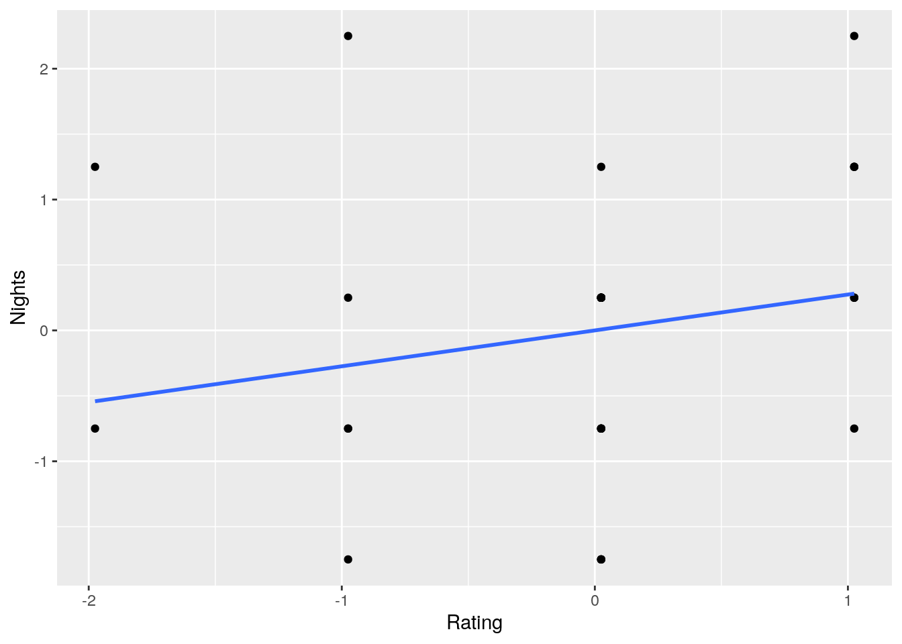
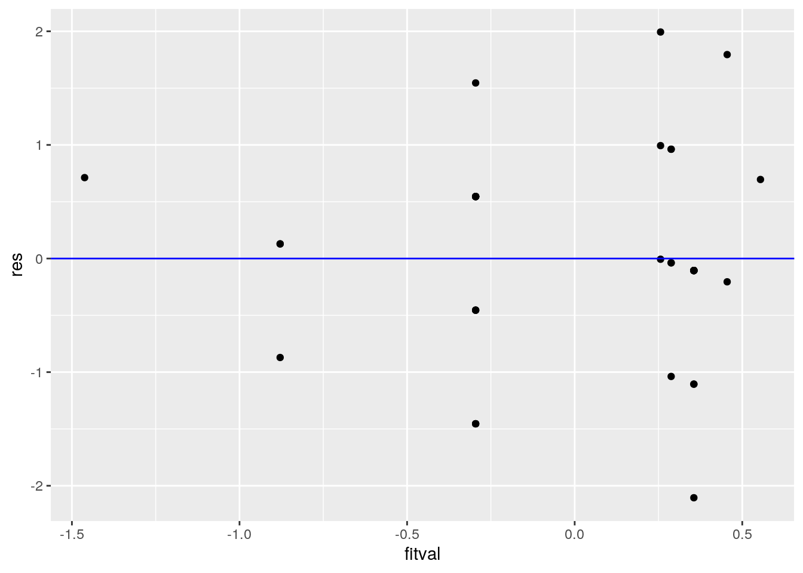
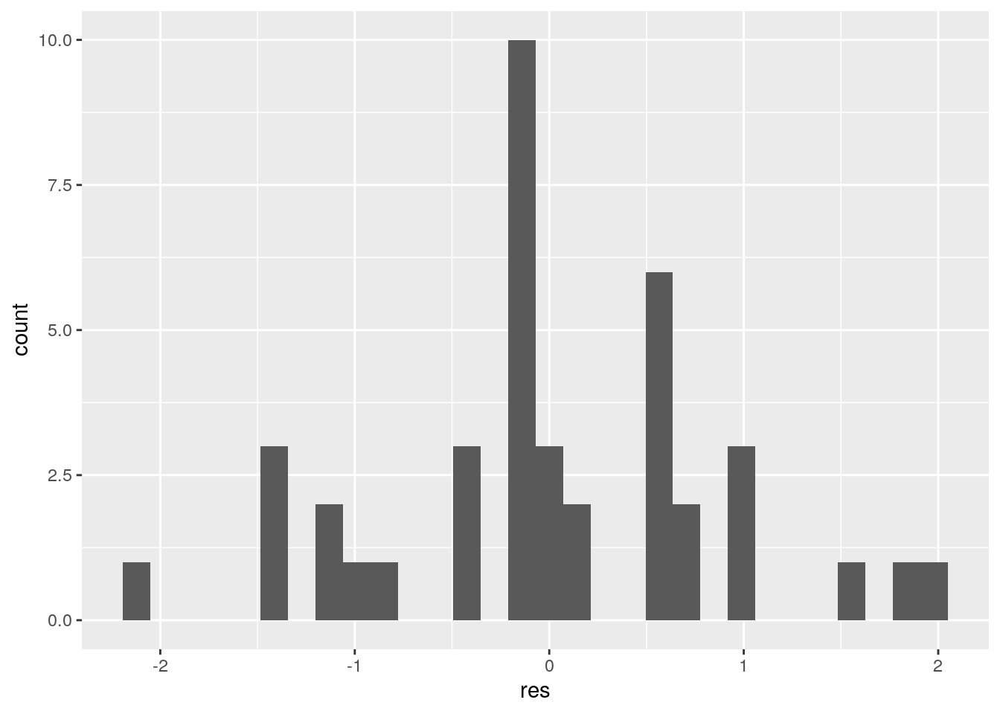
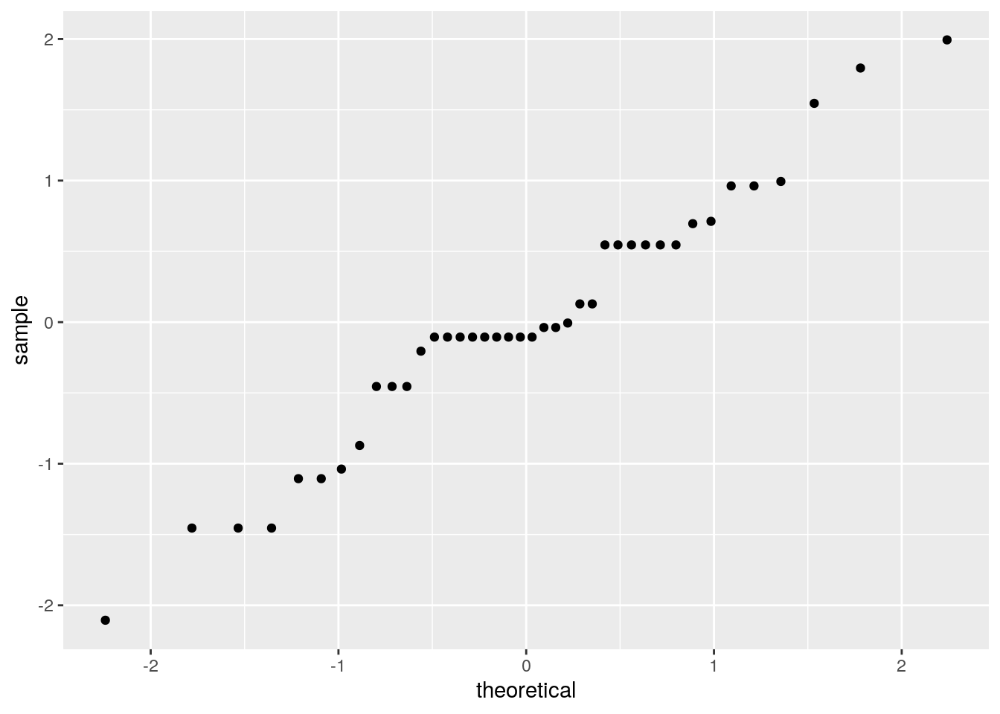
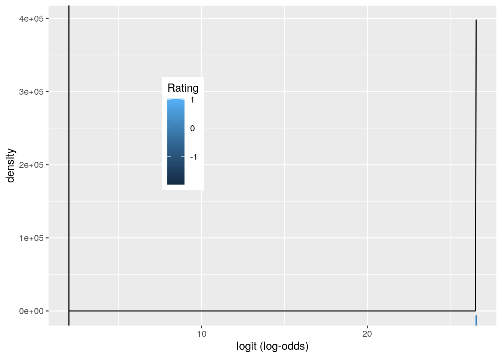
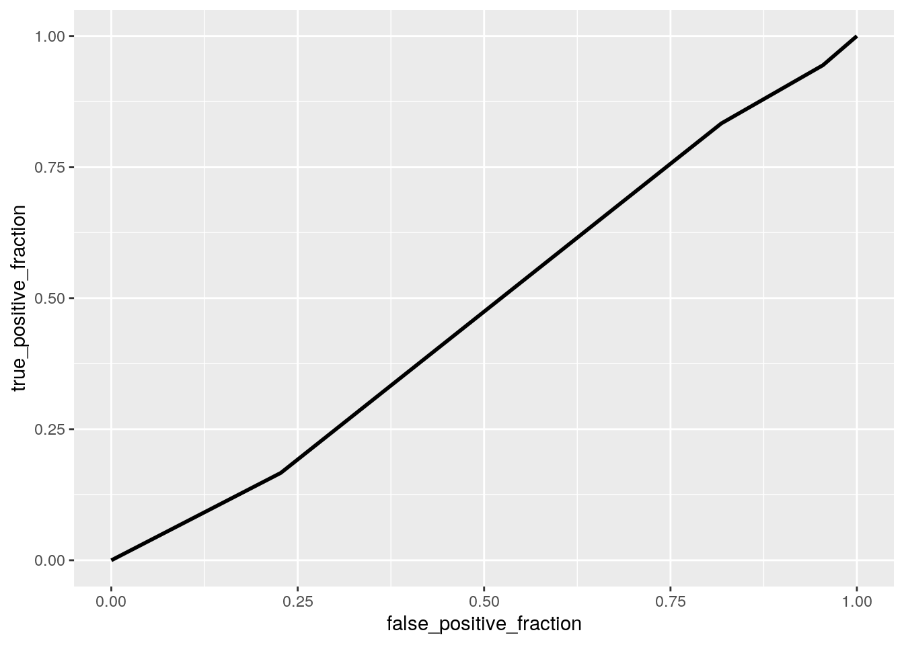

#0:Data Set
For the purpose of this project, I used an official dataset used on Medicare.gov for hospital quality comparison which showed hospital ratings. This data set was obtained from Kaggle.com and the Centers for Medicare and Medicaid. This data set contained 8 different variables, including: Hospital Name (Categorical), State (Categorical), Zip Code (numerical), Hospital Type; Acute, Critical, or Children’s Hosp. (Categorical), Ownership of Hospital;Voluntary Non Profit, Proprietary, or Government Owned (Categorical), Emergency Services Available; Yes=1/No=2 (Binary Numerical), Hospital Rating; Scale of 1-5 (Numerical), and Average Amount of Nights Spent by Patients (Numerical). Overall, these variables allowed me to analyze statistical trends.
#1:MANOVA/ANOVA Testing
library(AER)## Loading required package: car## Loading required package: carData## Loading required package: lmtest## Loading required package: zoo##
## Attaching package: 'zoo'## The following objects are masked from 'package:base':
##
## as.Date, as.Date.numeric## Loading required package: sandwich## Loading required package: survivaldatap<- read.csv("dataset.csv",
header = TRUE,
quote="\"",
stringsAsFactors= TRUE,
strip.white = TRUE)
data.frame(datap)## Name State ZIP Type
## 1 SOUTHEAST ALABAMA MEDICAL CENTER AL 36301 Acute
## 2 MARSHALL MEDICAL CENTER SOUTH AL 35957 Acute
## 3 ELIZA COFFEE MEMORIAL HOSPITAL AL 35631 Acute
## 4 MIZELL MEMORIAL HOSPITAL AL 36467 Critical
## 5 CRENSHAW COMMUNITY HOSPITAL AL 36049 Critical
## 6 PROVIDENCE ALASKA MEDICAL CENTER AK 99508 Acute
## 7 MAT-SU REGIONAL MEDICAL CENTER AK 99645 Critical
## 8 BARTLETT REGIONAL HOSPITAL AK 99801 Acute
## 9 FAIRBANKS MEMORIAL HOSPITAL AK 99701 Critical
## 10 ALASKA REGIONAL HOSPITAL AK 99508 Critical
## 11 ABRAZO MARYVALE CAMPUS AZ 85031 Critical
## 12 BANNER - UNIVERSITY MEDICAL CENTER PHOENIX AZ 85006 Acute
## 13 TUCSON MEDICAL CENTER AZ 85712 Critical
## 14 VERDE VALLEY MEDICAL CENTER AZ 86326 Acute
## 15 ST. MARY'S HOSPITAL AZ 85745 Acute
## 16 ST ROSE HOSPITAL CA 94545 Acute
## 17 ST JOSEPH HOSPITAL CA 95501 Acute
## 18 MILLS-PENINSULA MEDICAL CENTER CA 94010 Critical
## 19 CALIFORNIA PACIFIC MEDICAL CTR-DAVIES CAMPUS HOSP CA 94117 Critical
## 20 QUEEN OF THE VALLEY MEDICAL CENTER CA 94558 Acute
## 21 NORTH COLORADO MEDICAL CENTER CO 80631 Acute
## 22 LONGMONT UNITED HOSPITAL CO 80501 Critical
## 23 PLATTE VALLEY MEDICAL CENTER CO 80601 Acute
## 24 MONTROSE MEMORIAL HOSPITAL CO 81401 Acute
## 25 SAN LUIS VALLEY HEALTH CO 81101 Acute
## 26 UF HEALTH JACKSONVILLE FL 32209 Critical
## 27 BETHESDA HOSPITAL EAST FL 33435 Critical
## 28 ORLANDO HEALTH FL 32806 Acute
## 29 FLORIDA HOSPITAL FL 32803 Childrens
## 30 BAPTIST HOSPITAL OF MIAMI FL 33176 Critical
## 31 HAMILTON MEDICAL CENTER GA 30720 Childrens
## 32 UPSON REGIONAL MEDICAL CENTER GA 30286 Critical
## 33 MAYO CLINIC HEALTH SYSTEM IN WAYCROSS, INC GA 31501 Acute
## 34 NORTHSIDE HOSPITAL FORSYTH GA 30041 Critical
## 35 ST MARY'S HOSPITAL GA 30606 Critical
## 36 THE QUEENS MEDICAL CENTER HI 96813 Acute
## 37 MAUI MEMORIAL MEDICAL CENTER HI 96793 Acute
## 38 WAHIAWA GENERAL HOSPITAL HI 96786 Critical
## 39 HILO MEDICAL CENTER HI 96720 Critical
## 40 CASTLE MEDICAL CENTER HI 96734 Acute
## Ownership ER Rating Nights
## 1 Government 1 3 4
## 2 Government 0 3 5
## 3 Government 0 2 3
## 4 Voluntary non-profit 0 2 4
## 5 Proprietary 1 3 3
## 6 Voluntary non-profit 0 3 4
## 7 Voluntary non-profit 1 3 4
## 8 Government 0 3 4
## 9 Voluntary non-profit 1 3 5
## 10 Proprietary 1 3 5
## 11 Proprietary 0 2 4
## 12 Voluntary non-profit 1 3 5
## 13 Voluntary non-profit 0 3 4
## 14 Voluntary non-profit 0 4 6
## 15 Voluntary non-profit 1 3 5
## 16 Voluntary non-profit 1 1 6
## 17 Voluntary non-profit 1 3 5
## 18 Voluntary non-profit 0 4 5
## 19 Voluntary non-profit 0 3 5
## 20 Voluntary non-profit 0 3 5
## 21 Voluntary non-profit 1 4 5
## 22 Voluntary non-profit 1 3 5
## 23 Voluntary non-profit 0 3 3
## 24 Voluntary non-profit 0 4 5
## 25 Voluntary non-profit 0 3 5
## 26 Voluntary non-profit 0 1 4
## 27 Voluntary non-profit 1 3 5
## 28 Voluntary non-profit 0 3 6
## 29 Voluntary non-profit 1 2 7
## 30 Voluntary non-profit 1 3 5
## 31 Voluntary non-profit 1 4 7
## 32 Voluntary non-profit 1 3 5
## 33 Voluntary non-profit 0 3 3
## 34 Voluntary non-profit 0 3 3
## 35 Voluntary non-profit 0 4 4
## 36 Voluntary non-profit 1 4 6
## 37 Government 0 3 5
## 38 Voluntary non-profit 1 2 5
## 39 Government 0 4 6
## 40 Voluntary non-profit 0 3 5man1<-manova(cbind(Rating,Nights)~ZIP, data=datap)
summary(man1)## Df Pillai approx F num Df den Df Pr(>F)
## ZIP 1 0.044111 0.85371 2 37 0.4341
## Residuals 38summary.aov(man1)## Response Rating :
## Df Sum Sq Mean Sq F value Pr(>F)
## ZIP 1 0.4833 0.48328 0.8962 0.3498
## Residuals 38 20.4917 0.53926
##
## Response Nights :
## Df Sum Sq Mean Sq F value Pr(>F)
## ZIP 1 1.176 1.1761 1.1661 0.287
## Residuals 38 38.324 1.0085pairwise.t.test(datap$Rating,datap$Nights, p.adj="none")##
## Pairwise comparisons using t tests with pooled SD
##
## data: datap$Rating and datap$Nights
##
## 3 4 5 6
## 4 0.75 - - -
## 5 0.42 0.15 - -
## 6 0.40 0.21 0.80 -
## 7 0.75 0.57 0.85 0.75
##
## P value adjustment method: nonepairwise.t.test(datap$ER,datap$Rating, p.adj="none")##
## Pairwise comparisons using t tests with pooled SD
##
## data: datap$ER and datap$Rating
##
## 1 2 3
## 2 0.82 - -
## 3 0.96 0.76 -
## 4 0.76 0.93 0.62
##
## P value adjustment method: nonelibrary(rstatix)##
## Attaching package: 'rstatix'## The following object is masked from 'package:stats':
##
## filtergroup<- datap$ER
DVs<- datap %>% select(Rating,Nights)
sapply(split(DVs,group), mshapiro_test)## 0 1
## statistic 0.9388384 0.8022437
## p.value 0.1872916 0.001634151For this section, I performed five different statistical tests which included a MANOVA, two ANOVAs, and two t-tests. From the first MANOVA test, I was not able to obtain statistically significant differences between the hospitals. The Pillai value = 0.044111, the F value = 0.85371, and p value = 0.4341. There were two additional univariate ANOVA tests performed in order to determine the mean differences between the two data sets. For the Hospital Rating ANOVA test, I obtained an F value = 0.8962, and P-value = 0.3498. Additionally, I also ran a univariate ANOVA test on the ‘Nights’ variable, which showed the average amount of nights a patient spent at each respective hospitals. The statistics obtained for this test included, F value = 1.1661 and P-value= 0.287. The pairwise comparison tests, also known as t-tests, were conducted in order to determine the difference in values. The alpha value was adjusted with the Bonferroni method in order to avoid a Type I error. The p-value for Hospital Rating was < 0.05, indicating that the main assumptions are actually violated.
#2: Randomization test
library(vegan)## Loading required package: permute## Loading required package: lattice## This is vegan 2.5-7library(plyr)##
## Attaching package: 'plyr'## The following objects are masked from 'package:rstatix':
##
## desc, mutateddply(datap, "Rating", plyr::summarize, mean_Nights = mean(datap$Nights))## Rating mean_Nights
## 1 1 4.75
## 2 2 4.75
## 3 3 4.75
## 4 4 4.75datap %>% group_by(Rating) %>% summarize(means = mean(Nights)) %>% summarize(mean_diff = diff(means))## [1] mean_diff
## <0 rows> (or 0-length row.names)x1<- datap$Rating
y1<- datap$Nights
x2<- datap$ZIP
cor(x1,y1, method= "pearson")## [1] 0.1997645library(vegan)
dists <- datap %>% select(Rating, Nights, ZIP) %>% dist
adonis(dists~ER, data=datap)##
## Call:
## adonis(formula = dists ~ ER, data = datap)
##
## Permutation: free
## Number of permutations: 999
##
## Terms added sequentially (first to last)
##
## Df SumsOfSqs MeanSqs F.Model R2 Pr(>F)
## ER 1 3.6368e+06 3636792 0.0041662 0.00011 0.956
## Residuals 38 3.3171e+10 872929147 0.99989
## Total 39 3.3175e+10 1.00000#Observed F
library(tidyverse)## ── Attaching packages ─────────────────────────────────────── tidyverse 1.3.0 ──## ✓ ggplot2 3.3.3 ✓ purrr 0.3.4
## ✓ tibble 3.0.4 ✓ dplyr 1.0.2
## ✓ tidyr 1.1.2 ✓ stringr 1.4.0
## ✓ readr 1.4.0 ✓ forcats 0.5.0## ── Conflicts ────────────────────────────────────────── tidyverse_conflicts() ──
## x dplyr::arrange() masks plyr::arrange()
## x purrr::compact() masks plyr::compact()
## x dplyr::count() masks plyr::count()
## x dplyr::failwith() masks plyr::failwith()
## x dplyr::filter() masks rstatix::filter(), stats::filter()
## x dplyr::id() masks plyr::id()
## x dplyr::lag() masks stats::lag()
## x dplyr::mutate() masks plyr::mutate(), rstatix::mutate()
## x dplyr::recode() masks car::recode()
## x dplyr::rename() masks plyr::rename()
## x purrr::some() masks car::some()
## x dplyr::summarise() masks plyr::summarise()
## x dplyr::summarize() masks plyr::summarize()SST<- sum(dists^2)/200
SSW<- datap %>%group_by(datap$Rating)%>%select(Rating, Nights, ZIP, ER) %>%
do(d=dist(.[-1],"euclidean"))%>%ungroup()%>% summarize(sum(d[[1]]^2)/92 + sum(d[[2]]^2)/108)## Adding missing grouping variables: `datap$Rating`F_obs<-((SST-SSW)/1)/(SSW/198) #observed F statistic
#Fs<-replicate(1000,
#new <- datap %>%mutate(Rating=sample(Rating))
#PERMUTATION
#SSW <- new%>% group_by(Rating) %>% select(Rating,Nights, ZIP, ER) %>%
#do(d=dist(.[-1],"euclidean")) %>% ungroup() %>%
#summarize(sum(d[[1]]^2)/92 + sum(d[[2]]^2)/108)
#((SST-SSW)/1)/(SSW/198)
#Would not let me knit :(I was able to employ a Pearson correlation test in order to determine a relationship between Hospital Rating and amount of Nights spent, on average, by a patient. The correlation value = 0.1998, compared to HO:Rating will not have a strong correlation to average amount of nights spent by patients in the hospital, ZIP code, or if the hospital provides ER Services. HA: Rating will have a strong correlation to the average amount of nights spent by patients in the hospital, ZIP code, or if the hospital provides ER services.
#3: Linear Regression Model
library(ggplot2)
datap$Rating<- datap$Rating - mean(datap$Rating)
datap$Nights<- datap$Nights - mean(datap$Nights)
fit1<- lm(Nights ~ ER*Rating, data= datap)
summary(fit1)##
## Call:
## lm(formula = Nights ~ ER * Rating, data = datap)
##
## Residuals:
## Min 1Q Median 3Q Max
## -2.1056 -0.4546 -0.1056 0.5454 1.9938
##
## Coefficients:
## Estimate Std. Error t value Pr(>|t|)
## (Intercept) -0.3100 0.1981 -1.565 0.1264
## ER 0.6681 0.2954 2.261 0.0299 *
## Rating 0.5833 0.2681 2.175 0.0362 *
## ER:Rating -0.6827 0.4103 -1.664 0.1048
## ---
## Signif. codes: 0 '***' 0.001 '**' 0.01 '*' 0.05 '.' 0.1 ' ' 1
##
## Residual standard error: 0.9289 on 36 degrees of freedom
## Multiple R-squared: 0.2137, Adjusted R-squared: 0.1481
## F-statistic: 3.26 on 3 and 36 DF, p-value: 0.03252coef(fit1)## (Intercept) ER Rating ER:Rating
## -0.3100379 0.6681124 0.5833333 -0.6827122datap %>% ggplot(aes(Rating,Nights))+geom_point()+geom_smooth(method = 'lm', se=F)## `geom_smooth()` using formula 'y ~ x'
cor(datap$Rating, datap$Nights)## [1] 0.1997645res<- fit1$residuals
fitval<- fit1$fitted.values
ggplot()+geom_point(aes(fitval,res))+geom_hline(yintercept = 0, color = 'blue')
ggplot()+geom_histogram(aes(res))## `stat_bin()` using `bins = 30`. Pick better value with `binwidth`.
ggplot()+geom_qq(aes(sample=res))+geom_qq()
coeftest(fit1)[,1:2]## Estimate Std. Error
## (Intercept) -0.3100379 0.1981488
## ER 0.6681124 0.2954422
## Rating 0.5833333 0.2681411
## ER:Rating -0.6827122 0.4103186coeftest(fit1, vcov=vcovHC(fit1))[,1:2]## Estimate Std. Error
## (Intercept) -0.3100379 0.1952463
## ER 0.6681124 0.3241487
## Rating 0.5833333 0.2656524
## ER:Rating -0.6827122 0.5556209fit<- lm(Rating~Nights, data=datap)
SST<- sum((datap$Rating-mean(datap$Rating))^2)
SSR<- sum((fit$fitted.values-mean(datap$Rating))^2)
SSE<- sum(fit$residuals^2)
SSR/SST## [1] 0.03990586#4: Regression Model with bootstrapped std error
library("dplyr")
samp_ditn<- replicate(5000, {
boot_dat<-boot_dat<-datap[sample(nrow(datap),replace = TRUE),]
fit<- lm(datap$Rating~ datap$Nights* datap$ZIP, data= boot_dat)
coef(fit)
})
# SE Estimate
samp_ditn%>%t%>%as.data.frame%>%summarize_all(sd)## (Intercept) datap$Nights datap$ZIP datap$Nights:datap$ZIP
## 1 0 0 0 0samp_ditn %>% t %>% as.data.frame %>% pivot_longer(1:3) %>% group_by(datap$Hospital) %>% summarize(lower=quantile(value,.025), upper=quantile(value,.975))## # A tibble: 1 x 2
## lower upper
## <dbl> <dbl>
## 1 -0.212 0.0802Interestingly enough, after performing statistical tests the results showed equal SE values.
#5: Logistic Regression Model
library(tidyverse)
library(lmtest)
library(plotROC)
data1<- datap%>%mutate(y=ifelse(ER=="Yes",0,1))
head(data1)## Name State ZIP Type Ownership ER
## 1 SOUTHEAST ALABAMA MEDICAL CENTER AL 36301 Acute Government 1
## 2 MARSHALL MEDICAL CENTER SOUTH AL 35957 Acute Government 0
## 3 ELIZA COFFEE MEMORIAL HOSPITAL AL 35631 Acute Government 0
## 4 MIZELL MEMORIAL HOSPITAL AL 36467 Critical Voluntary non-profit 0
## 5 CRENSHAW COMMUNITY HOSPITAL AL 36049 Critical Proprietary 1
## 6 PROVIDENCE ALASKA MEDICAL CENTER AK 99508 Acute Voluntary non-profit 0
## Rating Nights y
## 1 0.025 -0.75 1
## 2 0.025 0.25 1
## 3 -0.975 -1.75 1
## 4 -0.975 -0.75 1
## 5 0.025 -1.75 1
## 6 0.025 -0.75 1fit2<-glm(y~ ER,data=data1,family=binomial(link="logit"))
coeftest(fit2)##
## z test of coefficients:
##
## Estimate Std. Error z value Pr(>|z|)
## (Intercept) 2.6566e+01 7.5926e+04 3e-04 0.9997
## ER 4.6229e-06 1.1318e+05 0e+00 1.0000exp(coef(fit2))## (Intercept) ER
## 3.447428e+11 1.000005e+00logistic<-function(x){exp(x)/(1+exp(x))}
#Confusion Matrix
table(truth=datap$ER, prediction=datap$Rating>1)%>%addmargins## prediction
## truth FALSE TRUE Sum
## 0 17 5 22
## 1 15 3 18
## Sum 32 8 40#Accuracy
(15+5)/40## [1] 0.5#TPR Sensitivity
15/18## [1] 0.8333333#TNR Specificity
5/22## [1] 0.2272727#PPV Precision
15/32## [1] 0.46875#AUC
widths<-diff(datap$y)
heights<-vector()
#for(i in 1:100) heights[i]<-datap$y[i]+datap$y[i+1]
AUC<-sum(heights*widths/2)
AUC%>%round(3)## [1] 0#density plot
datap$logit<-predict(fit2,type="link")
datap%>%ggplot()+geom_density(aes(logit,color=Rating,fill=Rating), alpha=.4)+ theme(legend.position=c(.3,.6))+geom_vline(xintercept=2)+xlab("logit (log-odds)")+geom_rug(aes(logit,color=Rating))
#ROC
library(plotROC)
ROCplot<-ggplot(datap)+geom_roc(aes(d=ER,m=Rating), n.cuts=0)
ROCplot
calc_auc(ROCplot)## PANEL group AUC
## 1 1 -1 0.479798From the analysis performed above, I was able to obtain a accuracy value of 0.5, TPR value = 0.8333, TNR value = 0.2273, PPV value = 0.4688, and AUC value extremely low (~0). The low AUC value indicates that the model is not reliable or extremely accurate in this specific case.
#6: 2nd Logistic Regression
#fit model
library(tidyverse)
library(lmtest)
library(pROC)## Type 'citation("pROC")' for a citation.##
## Attaching package: 'pROC'## The following object is masked from 'package:plotROC':
##
## ggroc## The following objects are masked from 'package:stats':
##
## cov, smooth, varlibrary(glmnet)## Loading required package: Matrix##
## Attaching package: 'Matrix'## The following objects are masked from 'package:tidyr':
##
## expand, pack, unpack## Loaded glmnet 4.0-2class_diag<-function(probs,truth){
tab<-table(factor(probs>.5,levels=c("FALSE","TRUE")),truth)
acc=sum(diag(tab))/sum(tab)
sens=tab[2,2]/colSums(tab)[2]
spec=tab[1,1]/colSums(tab)[1]
ppv=tab[2,2]/rowSums(tab)[2]
if(is.numeric(truth)==FALSE & is.logical(truth)==FALSE) truth<-as.numeric(truth)-1
ord<-order(probs, decreasing=TRUE)
probs <- probs[ord]; truth <- truth[ord]
TPR=cumsum(truth)/max(1,sum(truth))
FPR=cumsum(!truth)/max(1,sum(!truth))
dup<-c(probs[-1]>=probs[-length(probs)], FALSE)
TPR<-c(0,TPR[!dup],1); FPR<-c(0,FPR[!dup],1)
n<- length(TPR)
auc<- sum( ((TPR[-1]+TPR[-n])/2) * (FPR[-1]-FPR[-n]) )
data.frame(acc,sens,spec,ppv,auc)
}